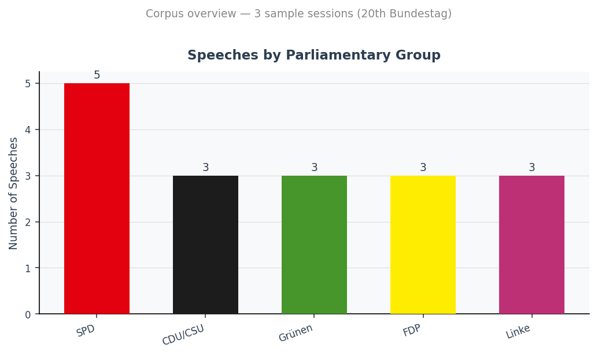
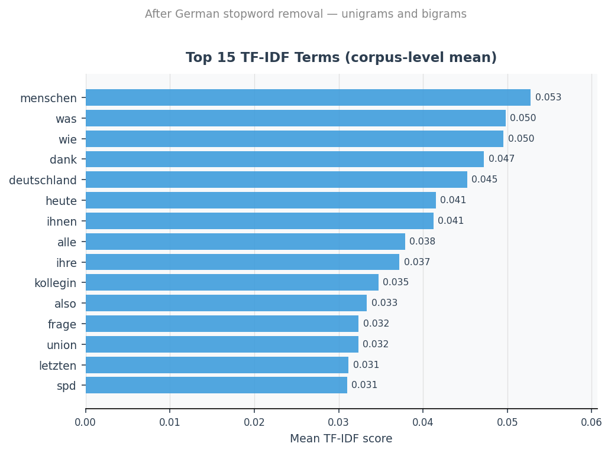
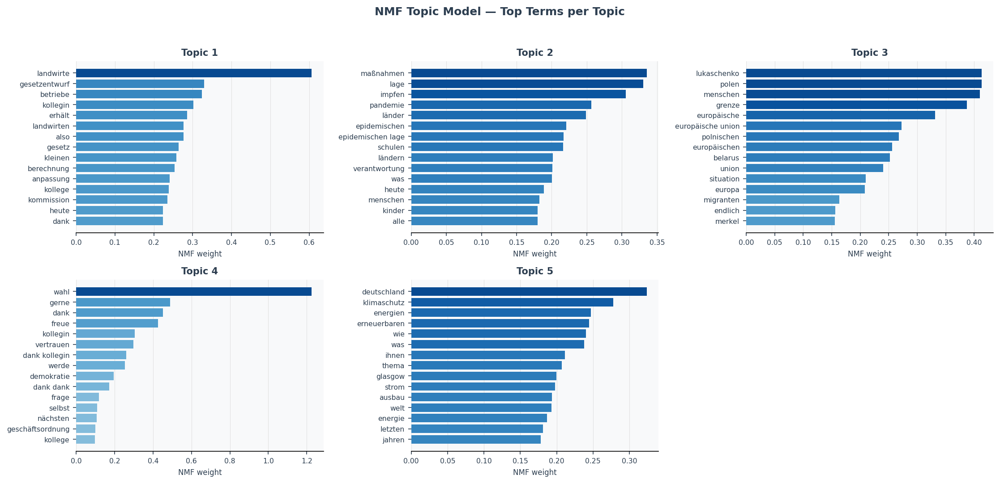
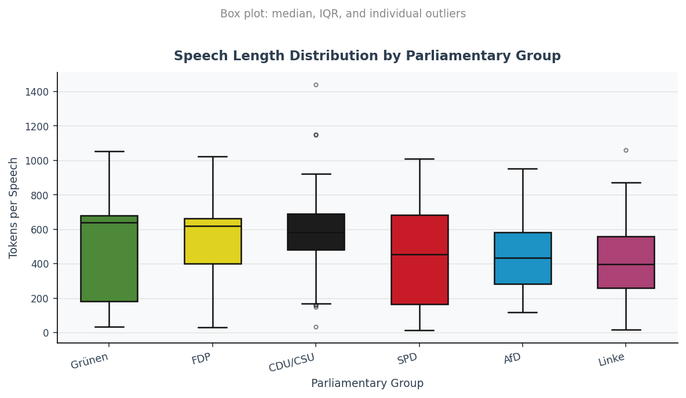

Domain
Computational Text Analysis
Data
Bundestag Plenarprotokolle (XML)
Language
Python 3.13
Status
Applied NLP case study
Role relevance
Demonstrates text-data processing, feature extraction, topic modelling, classification evaluation, and transparent communication of NLP results using public parliamentary records.
Summary: End-to-end NLP pipeline run on real Bundestag Plenarprotokoll XML files (open-data licence, directly downloadable from bundestag.de). Six plenary sessions from the 20th Bundestag (2021–2024) were parsed into a structured corpus of 180 speeches by 131 speakers. TF-IDF feature extraction and NMF topic modelling recover five interpretable thematic clusters: COVID response, agricultural legislation, the 2021 Belarus/Poland border crisis, climate and energy policy, and parliamentary procedural discourse.
Research Question
Can standard NLP methods recover meaningful thematic structure from German parliamentary speech transcripts, and how consistently do speeches cluster by policy domain rather than by party affiliation? The project prioritises workflow quality and reproducibility alongside analytical rigour.
Data Source
German Bundestag Plenarprotokolle are published in a structured XML format under an open-data licence (Datenlizenz Deutschland – Namensnennung – Version 2.0). Each XML file contains one plenary session and encodes speaker name, parliamentary group (Fraktion), session date, and full speech text in a machine-readable structure defined by the official DTD (version 1.0.2, September 2023).
The pipeline uses six real plenary sessions directly downloaded from the Bundestag open-data portal: Sessions 1 (26 October 2021, inaugural session), 2 (11 November 2021), and 3 (18 November 2021) from the opening of the 20th Bundestag; and Sessions 180 (20 March 2024), 185 (17 April 2024), and 190 (8 May 2024) from 2024. This two-period sample spans both the coalition formation phase and a mid-term legislative period, providing a varied thematic cross-section.
Data source
Deutscher Bundestag — Open Data Portal, bundestag.de/services/opendata. Files are directly downloadable (no authentication required) under Datenlizenz Deutschland – Namensnennung – Version 2.0 (dl-de/by-2-0).
Pipeline
1
Data Acquisition (01_fetch_data.py)
Loads sample XML files or downloads protocols via the Bundestag DIP REST API. Writes a session manifest and organises raw files by session number.
2
XML Parsing (02_parse_xml.py)
Traverses each <rede> element using lxml, extracts speaker name, Fraktion, speech ID, and paragraph text. Outputs a structured CSV corpus (one row per speech).
3
Text Preprocessing (03_preprocess.py)
Removes procedural annotations (Beifall, Zuruf), applies NFKC normalisation, lowercases, strips punctuation, tokenises, and filters against a German stopword list covering function words and parliamentary filler phrases. Outputs a vocabulary frequency table.
4
TF-IDF & NMF (04_analyse.py)
Builds a TF-IDF feature matrix (max 500 features, unigrams + bigrams, sublinear TF scaling). Fits a Non-negative Matrix Factorisation model (k = 5 topics, NNDSVDA initialisation) to recover latent topic structure. Optionally runs a logistic regression classifier to predict Fraktion from speech text.
5
Visualisation (05_visualise.py)
Generates four static figures using matplotlib and seaborn: corpus composition, top TF-IDF terms, per-topic term charts, and speech-length distribution. All figures are reproducible from code — no manual editing.
Results
Corpus: 180 speeches · 6 sessions · 131 unique speakers · 6 Fraktionen · 9,896 unique tokens after preprocessing · mean speech length: 212 tokens (median: 222).
Party breakdown: SPD 41 speeches, CDU/CSU 41, AfD 26, Bündnis 90/Die Grünen 27, FDP 21, Die Linke 19. Reflects coalition composition of the 20th Bundestag.
NMF Topic Model — 5 Topics
Topics are derived from term co-occurrence patterns in the real corpus. Labels are interpretive, not ground truth. Top terms shown as extracted by the model.
| # | Top Terms (extracted) | Interpretation |
|---|
| 1 | landwirte, gesetzentwurf, betriebe, landwirten, gesetz, erhält | Agricultural legislation |
| 2 | maßnahmen, lage, impfen, pandemie, länder, epidemischen, schulen | COVID-19 pandemic response |
| 3 | lukaschenko, polen, grenze, europäische union, polnischen, europäischen | Belarus/Poland border crisis (2021) |
| 4 | wahl, dank, freue, kollegin, vertrauen, werde | Parliamentary procedural / inaugural session |
| 5 | deutschland, klimaschutz, energien, erneuerbaren, thema | Climate & renewable energy |
Party Classification (exploratory)
Logistic regression trained on TF-IDF features to predict Fraktion from speech text. 5-fold stratified cross-validation accuracy: 32.0% ± 5.5% (6-class problem; random-chance baseline: ~17%). The model performs substantially better than chance, suggesting that speech vocabulary carries some party-specific signal even in a small cross-session sample. Results should not be over-interpreted given corpus size.
Figures

Fig. 1 — Speeches by parliamentary group across 6 real sessions. SPD and CDU/CSU are joint-largest, reflecting the 20th Bundestag composition.

Fig. 2 — Top 15 TF-IDF terms (corpus mean) after German stopword removal. High-frequency civic and deliberative vocabulary reflects parliamentary register.

Fig. 3 — NMF topic model (k = 5) on real corpus. Each panel shows the top terms by NMF weight for one latent topic. The topics correspond to real legislative and geopolitical events in the 20th Bundestag: the 2021 pandemic, the Belarus/Poland border crisis, agricultural legislation, and climate policy.

Fig. 4 — Speech length (tokens after preprocessing) by Fraktion. Distributions reflect the structured speaking time in Bundestag debate rounds. Outliers correspond to longer ministerial or committee statements.
Limitations
- Corpus size: Six sessions (180 speeches) is a small sample of the full 20th Bundestag corpus (214 sessions). TF-IDF and NMF results are exploratory; robust topic inference and classification would require several thousand speeches across a representative session sample.
- Session selection: The two time windows (Oct–Nov 2021 and Mar–May 2024) may not be representative of the full Wahlperiode. The inaugural sessions in particular contain atypically many procedural speeches.
- German compound words: Compound splitting is not applied; compounds like Digitalisierungsstrategie are treated as single tokens, reducing recall on semantically related terms.
- Party classification accuracy: The 5-fold CV accuracy (32%) reflects a genuinely difficult 6-class problem on a small corpus. The figure is reported with appropriate caveats and should not be over-interpreted.
- Topic labels: NMF topic assignments are exploratory, not confirmatory — they describe lexical clusters, not verified political categories.
Next Steps
- Extend to the full 20th Bundestag corpus (214 sessions, directly downloadable from bundestag.de)
- Add German compound splitting (using
CharSplit or a custom trie-based splitter)
- Tune NMF topic count k using coherence metrics across a range of values
- Add time-series analysis: topic share per session over the Wahlperiode
- Evaluate Fraktion classification at larger corpus scale, with proper train/test splits
- Extend to cross-party bigram analysis (shared vocabulary patterns and divergence)
Tools
Python 3.13
lxml
pandas
scikit-learn
TF-IDF
NMF
matplotlib
seaborn
Git
Reproducibility
The full pipeline runs in five numbered scripts (01–05) that can be executed sequentially from a fresh clone. All dependencies are pinned in requirements.txt. Figures are generated entirely from code; no manual post-processing. The parser switches automatically between sample XML and API-downloaded data depending on what is available in data/.
Data use & ethical note
This project uses public parliamentary speech data published in official open-access records by the German Bundestag. It is a methodological demonstration of text preprocessing, topic exploration, and transparent visualisation. It does not involve private data, operational analysis, or profiling of private individuals. No political claims or partisan interpretations are drawn from the results. All outputs describe aggregate patterns in publicly available institutional text.